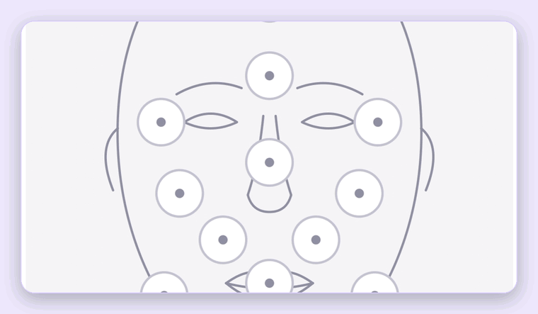

Simulating aesthetic treatment results

Overview
Elara is a mobile web app for aesthetic clinics that shows patients a realistic AI simulation of a treatment's result on their own face, during the consultation itself. Beyond the simulation, it keeps each patient's before, simulation and real-result photos as a GDPR-conscious clinical record. It's built for aesthetic doctors and clinic staff, working on a phone with the patient present — not a marketing tool, with no sharing and no lead capture.
Problem Definition
In aesthetic consultations, patients struggle to picture the outcome of a treatment — neuromodulators, dermal fillers, skin treatments — when it's only described in words, through generic before/after galleries or hand sketches. That made it harder to form realistic expectations or feel confident in a decision. Clinics also needed consistent clinical photos to document results, with those photos counting as health data under the GDPR.
Role and process
I led product definition, the approved clickable prototype, the Healthtec design system (v0.1), clinical copy and terminology, and every product decision and design review — mostly validated on a real phone. Claude Code acted as an AI engineering partner: I directed scope, priorities and every design decision, while it wrote and tested the code, explained trade-offs, and documented decisions in a living project brief. I set up the infrastructure myself — GitHub, Vercel, Neon and Google AI Studio billing — guided step by step.
- Brief as source of truth. One living document covering product, users, language rules, design system, architecture, privacy rules, the validated AI prompt and build phases, updated as decisions were made.
- Six build phases, each reviewed before the next: setup → port the prototype → persistence → guided camera → AI simulation → pilot hardening.
- Design iteration on a real phone after each phase, with rounds of feedback on navigation, consent, statistics, the treatment screen and the camera.
- Closed beta with friends and test users — the current stage.
From prototype to pilot-ready MVP
10 days, 4–13 October: from an approved prototype to a pilot-ready MVP deployed in the EU — 30 saved versions, about 7,300 lines of TypeScript across 84 source files.
Goals
Help patients see a credible preview of their treatment before committing to it, in the moment of the consultation.
Give clinics a consultation and record-keeping tool that supports the conversation without ever overpromising a result.
The consultation flow
The core of Elara is a guided six-step flow — covering 30 treatments across 11 facial zones and 10 clinical photo types — that takes the clinician from patient intake to a simulated result, with consent and a validated photo protocol built in along the way.
| Step | What happens | Why it matters |
|---|---|---|
| Patient data | Name, surname and clinic code are captured first | Every consultation is tied to a verifiable patient record |
| Treatment area | The clinician selects the zone on an anatomical face map | Keeps clinical input precise instead of free text |
| Treatment | Treatment, and brand for neuromodulators, is selected per zone | Different brands produce different expected results |
| Consent | Full consent text, three required clauses plus a signature pad | No photo is taken before consent is signed |
| Guided photography | A live 3:4 camera with a face-oval guide checks framing, level and lighting | The simulation is only as accurate as the input photo |
| Estimated result | A draggable before/after slider shows the simulation, clearly labeled as AI-generated | Sets expectations without presenting the preview as guaranteed |
Each patient also keeps a clinical record of before, simulation and real-result photos per treatment, with zoom, swipe, download and side-by-side comparison, plus clinical notes (product, dose, lot) and the signed consent PDF. A statistics view tracks patients and treatments over time, a face map of treated areas, and ranked treatments per clinic.
Key decisions and why
- The photo must match the prompt. An early test paired a raised-eyebrow photo with a "frown" instruction, and the AI changed the patient's expression instead of just the treated area. Every treatment now requires a specific photo type, and the server refuses mismatches.
- The AI prompt is built server-side from IDs, never sent by the phone, so it can't be tampered with — protected by a unit test on the validated prompt.
- Scope cut for the MVP. Brand-specific simulations, presentation mode, the evolution view and offline saving were removed and kept as future possibilities.
- Online only. Offline saving was built and removed the same day after its complexity caused a bug — without a connection, a full-screen notice covers the app and nothing is lost.
- Consent reuse with versioning. A signature stays valid for 2 years, only for the current consent text; the app explains clearly when and why it asks again.
Technical approach
This project doubled as an exercise in building production-ready software end to end with Claude Code, from architecture decisions through to implementation and deployment.
- Next.js (App Router) + TypeScript, one repository for the frontend and API routes
- Deployed on Vercel (Frankfurt), with serverless functions pinned to an EU region, since patient photos count as health data under GDPR
- Patients, consultations and clinical data persisted in Neon Postgres, with photos stored in Vercel Blob, both EU-based
- Each simulation is generated server-side through Google Gemini's Nano Banana 2 Lite model, about $0.04 per simulation, with the prompt built from a shared frame (keep identity and expression, edit only the treated area, stay photorealistic and clinically plausible) plus one line per treatment with its effect and intensity
- Generation temperature lowered for consistency, with automatic colour correction after each result, since the model sometimes returned greyer images
- Consent PDFs generated with pdf-lib; code written and tested by Claude Code, infrastructure on GitHub, Vercel and Google AI Studio
Prompt lesson
A prompt describing a frown, sent together with a photo of raised eyebrows, made the model change the patient's expression entirely instead of just the treatment area. Every simulation now has to match its photo to its intended expression before it's sent, encoded as a fixed photo protocol per treatment. Next step: per-treatment prompt tuning with a small, consented test set.
Privacy and security
Patient photos are health data under the GDPR, so privacy was a design constraint from day one, not an afterthought.
- Servers, database and photo storage all hosted in Frankfurt (EU); private photo storage, no public links
- No photo is taken before consent; consent text is versioned and re-requested when it changes
- Logs never contain photos, names or notes; a separate access log records who viewed or changed each record
- Automatic deletion after 2 years, full deletion of a patient and every related photo, and a nightly sweep removing stray uploads
- Individual hashed-password accounts, login lockout after repeated failures, and limits on AI simulations for cost control
- AI runs on the paid tier only, so data isn't used for training; still pending before real patients: data processing agreements, legal review, and a possible move to Vertex AI for guaranteed EU processing
Challenges and how they were solved
- iPhone constraints: the camera and share sheet only open from a direct tap, a fixed button drifted while scrolling, and one CSS feature wasn't supported on some iPhones — each led to a specific, documented fix.
- AI access: Google's free tier had zero quota for the image model, so billing had to be set up before the simulation step could work at all.
- A saving bug in new code was caught during my own testing; the affected treatment was recovered and "test the full save path" became a standing rule.
- Deployment issues — a blocked first deploy over author identity, and a missed automatic deploy — were both diagnosed and fixed.
Outcomes and learnings
- A working, installable app live at
elara-ochre.vercel.app, running entirely on EU infrastructure. - Pilot-ready hardening: per-clinic account separation, an access log, simulation limits, retention and deletion rules, and a separate test database with automatic updates on deploy.
- A validated AI prompt structure and photo protocol for the first treatments, documented for extending to new ones.
- Currently in closed beta with friends and test users; no usage metrics yet, with feedback collection just starting before moving toward real patients, data processing agreements and legal review.
Learning
Designing for an AI model you don't fully control means designing its constraints as carefully as its interface — the photo protocol mattered as much as any screen I drew. Building the product end-to-end with Claude Code as an engineering partner also shifted where my time went: review discipline and clear decisions mattered more than implementation speed.